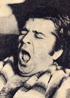
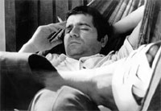

Prêmios
Prêmios e homenagens
Molière, Jabuti, Shell, Mambembe. E teatros, salas, praças e prêmios que hoje levam o seu nome.



Teatro amador
- Melhor ator: Festival Regional de Teatro Amador, Santos, 1958
- Melhor diretor: II Festival Teatro Amador, Santos, 1959
- Melhor espetáculo: II Festival Teatro Amador, Santos, 1959 (Barrela)
- Menção honrosa, diretor: Festival Teatro Amador Est. São Paulo, 1960
Teatro profissional
- Golfinho de Ouro: destaque teatro, Governo do Estado da Guanabara, 1967
- Prêmio Governador do Estado (SP): melhor autor, 1967
- Prêmio Jabuti: melhor livro de teatro, 1968
- Molière: melhor autor, Rio de Janeiro, 1967
- Molière: melhor autor, São Paulo, 1967
- Molière: melhor autor, São Paulo, 1973
- Molière: melhor autor, São Paulo, 1977
- Molière: prêmio especial, São Paulo, 1980
- Molière: melhor autor, São Paulo, 1982
- Molière: melhor autor, São Paulo, 1985
- Molière: melhor autor, São Paulo, 1986
- APCT (Associação Paulista de Críticos de Teatro): melhor autor, 1967
- APCA (Associação Paulista de Críticos de Arte): menção especial, 1973
- APCA: melhor autor de teatro, 1975
- APCA: melhor autor de romance (Querô), 1976
- APCA: melhor autor de teatro, 1977
- APCA: conjunto de obras teatrais, 1980
- Prêmio Yazigi: melhor autor, Rio de Janeiro, 1967
- TV Excelsior: destaque do ano em teatro, 1967
- Troféu Imprensa: revelação masculina, ator, 1968
- Prêmio Gato de Ouro (TV Globo): melhor ator revelação, 1968
- Prêmio Plá: grande curtidor, Rio de Janeiro, 1971
- Prêmio Plá: grande curtidor, Rio de Janeiro, 1973
- Prêmio Plá: grande curtidor, Rio de Janeiro, 1976
- Troféu TV Tupi: destaque, Rio de Janeiro, 1973
- Prêmio Inacem: melhor autor, São Paulo, 1982
- Prêmio Mambembe: melhor autor, São Paulo, 1980
- Prêmio Mambembe: melhor autor, São Paulo, 1985
- Prêmio SNT: melhor autor, Rio de Janeiro, 1982
- Prêmio da Secretaria de Cultura de Santos: teatro crítico, 1983
- Troféu da Prefeitura de Campinas: homenagem, 1980
- Troféu Nossa Caixa: homenagem, 1988
- Prêmio Shell: melhor autor, 1993
Algumas homenagens
- Título de Cidadão Emérito de Santos: Câmara Municipal, 8/12/98
- 18º Salão do Livro em Paris, 20 a 25 de março de 1998: um dos escritores convidados a participar do evento que tinha o Brasil como convidado de honra
- Homenagem póstuma do Jabaquara F.C.: no cortejo para jogar suas cinzas no mar na Ponta da Praia, em Santos, onde morou com sua família, na Rua Antônio Damin, 14
- Show Prisioneiro de uma Canção: show roteirizado, dirigido e musicado por seu filho Léo Lama, com textos, poemas e letras de músicas escritas por Plínio Marcos, realizado no Teatro Popular do SESI, SP, em 29/2/2000
- Plínio Marcos, um Grito de Liberdade: exposição promovida pela Secretaria de Estado da Cultura de São Paulo, Fundação Memorial da América Latina e amigos de Plínio Marcos; curadoria JC Serroni e Tanah Correa; abertura em dezembro de 2000, no Memorial da América Latina, SP
- Teatro Nacional Plínio Marcos: Complexo Cultural da Funarte, Brasília
- Teatro Plínio Marcos: Shopping Pompéia Nobre, Rua Clélia, 33, São Paulo
- Sala de Espetáculos Plínio Marcos: Secretaria de Cultura, Santos, SP
- Biblioteca Municipal Plínio Marcos: Praça Palmares, Caruara, Santos, SP
- Espaço Plínio Marcos: Praça Benedito Calixto, Pinheiros, São Paulo
- Espaço Cultural Plínio Marcos: Ilha Comprida, Vale do Ribeira, SP
- Albergue Plínio Marcos: Rua Bartolomeu de Gusmão, 98, São Cristóvão, RJ
- Marco Teatral Plínio Marcos: sede do Teatro União e Olho Vivo, SP
- Prêmio Plínio Marcos: premiações de teatro da Baixada Santista, Santos, SP
- Prêmio Estímulo Plínio Marcos, teatro adulto: Secretaria de Cultura do Estado de São Paulo
- Prêmio Plínio Marcos: Festival Internacional de São José dos Campos, SP
- Espaço Cultural Plínio Marcos: no Dique da Vila Gilda, em Santos, com cópia do acervo de Plínio Marcos